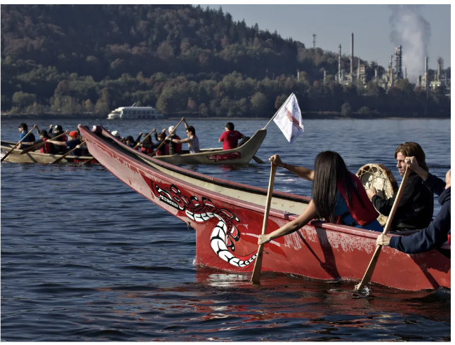

By Benjamin Hobson
August 12, 2026
In 2024, the Supreme Court ruled that criminalizing people for sleeping outside did not constitute cruel and unusual punishment. What San Francisco has done with that discretion since, sweeps, bus tickets, a re-timed count, produces a landscape that looks improved whether or not the underlying problem has.

By Benjamin Hobson
February 24, 2026
OpenAI's shares traded on secondary markets at a $500 billion valuation in October. Its rumored IPO target is $1 trillion. The company doesn't expect to turn a profit until around 2030. How a company gets from $500 billion to $1 trillion in under a year, without turning a profit, is worth understanding.

By Benjamin Hobson
February 2, 2026
Live, in front of over 43 million Americans, during the Vice-Presidential debate, JD Vance stated: "You have got housing that is totally unaffordable because we brought in millions of illegal immigrants to compete with Americans for scarce homes..."

By Benjamin Hobson
February 19, 2025
For decades, Canada has grappled with how to meaningfully address the lasting economic and social injustices faced by Indigenous communities. New Zealand's investment-driven approach to empowering the Māori offers a model worth studying.